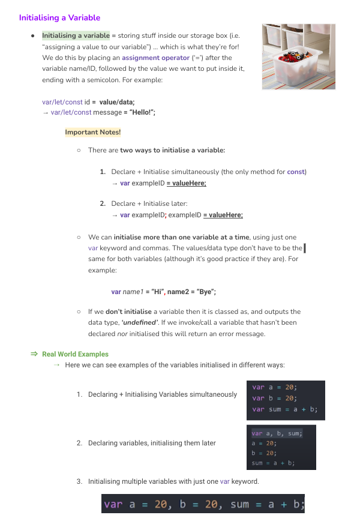

My Education üéì
I am a self-taught web developer and proud of it. These days it seems most people learn web development through a bootcamp or cohort-based course and, although I was tempted to do be another one of those people, I ultimately decided not to be and here's why.
When learning something new, I like to take notes ... lots of detailed, organised, colourful notes! I'm also quite a curious person and therefore I like to explore new things in-depth or understand better how they work. All this takes a lot of time and effort.
My main concern with bootcamps and courses was the short time-frame they advertised - typically around 3/4 months. I already knew there was going to be a lot to learn in web development (little did I actually know!), and that a lot of this new information was going to be difficult, complex, and quite different from anything I had learned before.
Knowing these things, I wanted to give myself the best opportunity to learn and note-take at my own pace, and to explore topics in greater depth when I found myself naturally wanting to do so. I didn't want to just touch the surface of these topics, or go through so many topics so quickly that by the end of a course I only had a basic understanding of half of them. I wanted to properly learn and understand web development, even if that meant doing it more slowly.
So, that's what I've done! And I think it was worthwhile. Being self-taught is not an easy route, and I recognise it has its disadvantages in comparison to the aforementioned courses. However, I believe that although I haven't received the same formal education and training as those that have done such courses, this doesn't diminish in any way the quality of my own education or my lack of dedication to the learning of web development, and I believe my notes (see below) attest to that.
Certifications üìÑ
During winter 2022/2023 I completed two modules of the online META (Facebook) Frontend Professional Developer Certificate. In these modules, which I completed by myself, I enhanced my knowledge and understanding of both Javascript and Version Control (Git/Github) through a series of lectures, practical exercises and quizzes.
My Notes üìù
Below you can see several screenshots of own personal collection of notes on web development and different topics such as HTML, CSS, Javascript and Version Control.
There's still more work to do here and more topics to cover. However, making these notes has helped me tremendously in teaching myself web development, and what's more they now serve as a constant reference point which I can go back to in case I ever get stuck or forget important bits of information while carrying out real projects.
HTML Notes
CSS Notes

Javascript Notes
Version Control Notes
Other Education üèõÔ∏è
Of course, my overall education in life is not just limited to the above! As well as these things, I also have a qualification in Teaching English as a Foreign Language, a Master's in Filmmaking, and a degree in Social Anthropology. Learn more about my other sources of education here.